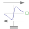

EddyCurrentForceSimple model of a translational eddy current brake |

|
Information
This information is part of the Modelica Standard Library maintained by the Modelica Association.
This is a simple model of a translational eddy current brake. The force versus speed characteristic is defined by Kloss' equation.
Thermal behaviour:
The resistance of the braking fin is influenced by the actual temperature Theatport, which in turn shifts the speed v_nominal at which the (unchanged) maximum torque occurs.
If the heatPort is not used (useHeatPort = false), the operational temperature remains at the given temperature T.
However, the speed v_nominal at which the maximum torque occurs is adapted from reference temperature TRef to the operational temperature.
Parameters (7)
| useSupport |
Value: false Type: Boolean Description: = true, if support flange enabled, otherwise implicitly grounded |
|---|---|
| useHeatPort |
Value: false Type: Boolean Description: =true, if heatPort is enabled |
| T |
Value: 293.15 Type: Temperature (K) Description: Fixed device temperature if useHeatPort = false |
| f_nominal |
Value: Type: Force (N) Description: Maximum force (always braking) |
| v_nominal |
Value: Type: Velocity (m/s) Description: Nominal speed (leads to maximum force) at reference temperature |
| TRef |
Value: Type: Temperature (K) Description: Reference temperature |
| alpha20 |
Value: Type: LinearTemperatureCoefficient20 (¹/K) Description: Temperature coefficient of material |
Connectors (3)
| flange |
Type: Flange_b Description: Flange of component |
|
|---|---|---|
| support |
Type: Support Description: Support/housing of component |
|
| heatPort |
Type: HeatPort_a Description: Optional port to which dissipated losses are transported in form of heat |
Used in Examples (1)
|
Modelica.Mechanics.Translational.Examples Demonstrate the usage of the translational eddy current brake |